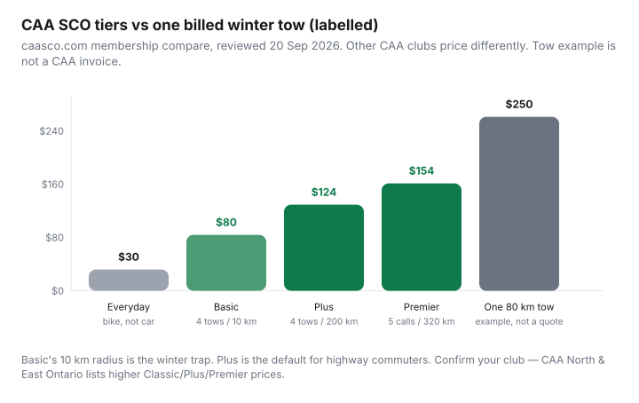

Transportation · Canada
Is CAA membership worth it in Canada? Roadside tiers vs credit-card coverage

Canadians treat CAA like a personality: either “we have always had Plus” or “my Visa already includes roadside.” Both camps skip the only numbers that matter on a −20°C shoulder: how far they will tow you, how many calls you get, and whether anyone actually dispatches a truck or mails you a form. CAA is a club, not one national SKU. South Central Ontario’s grid is not North & East Ontario’s, and neither is CAA Québec. Read the club that owns your postal code.
This is education, not a sales floor. Pair winter tires and insurance with the tire budget and policy shopping. If you barely drive, start with car-share vs owning instead of a Premier card.
Key takeaways
- CAA South Central Ontario (caasco.com): Everyday $30, Basic $80, Plus $124, Premier $154/year plus tax. Basic = 4 tows / 10 km. Plus = 4 tows / 200 km. Premier = 5 calls, one tow to 320 km and four to 200 km.
- CAA North & East Ontario listed Classic $115, Plus $165, Premier $205. Same idea, different dollars. Always open your club.
- Membership typically covers you, including as a passenger, in Canada and the U.S. — confirm terms. Many credit-card and insurer add-ons cover a VIN instead.
- Card roadside is often short-tow and reimbursement. It is a backup, not a 200 km winter plan, unless the certificate says otherwise.
- Fuel, travel, and store discounts are secondary. If you need them to “make Plus worth it,” you are stretching. Towing is the product.
What Basic / Plus / Premier-style tiers typically cover
Names vary (Classic vs Basic vs Everyday). The pattern does not: a cheap tier with a short tow, a mid tier with a long tow, a top tier with an extra call and a longer one-shot tow. CAASCO’s compare page (reviewed 20 Sep 2026):
| Everyday | Basic | Plus | Premier | |
|---|---|---|---|---|
| Price / year | $30 | $80 | $124 | $154 |
| Service calls | 1 (bike) | 4 | 4 | 5 |
| Tow distance | 10 km (bike) | 10 km | 200 km | 320 km (one) + 200 km (four) |
| Fuel delivery | — | Delivery free; you pay pump price | Fuel included | Fuel included |

Lockout, flat tire, boost, and extrication generally sit inside those call counts. Dual rear wheels, motorcycles, and U.S. motorcycle service have footnotes on club pages — read them if that is your vehicle. Beyond allotted calls, you pay contractor rates.
Towing distance and call limits that matter in winter
A dead battery in a driveway is a boost. A seized engine on Highway 11 is a tow to a dealer 90 km away.
Basic’s 10 km radius ends at the next town. Plus’s 200 km covers most “get me to my shop” winters in southern Ontario. Premier’s 320 km is for the one ugly trip — cottage roads, a relative in another city, a car that cannot be left overnight.
Wait times in a polar-vortex week are not in the brochure. Membership is dispatch priority relative to non-members, not a teleport. If you live somewhere trucks will not go, no tier fixes a seasonal road. Keep a charged pack and a winter kit anyway; CAA is not a heater.
Count last year’s events. Zero calls for five years and a 4 km commute: Basic or a strong card may be enough. One rural winter commute and an aging battery: Plus is the default. Three cars, teenage drivers, and 400 km weekends: look at associate memberships (priced on the club site) rather than one Premier and hope.
Compare to credit-card roadside and insurer add-ons
Pull the benefits guide, not the marketing tile.
- Dispatch vs reimbursement. If you must pay the driver and submit a claim, your card is a bank, not a truck. At −20°C you still need a contractor who answers.
- Distance. 5–10 km tows are common on cards. That is CAASCO Basic, not Plus.
- Call caps of one or two per year.
- Who is covered — cardholder in any car vs the vehicle on the insurance policy vs the CAA member as a person.
- Exclusions: unlicensed drivers, off-road, racing, unmaintained vehicles, waiting for parts in a ditch.
Insurer roadside is often cheaper as a bolt-on and follows the car. Fine if one VIN is the only vehicle you touch. Useless when you are the passenger in a friend’s Civic on a ski hill. CAA’s “covers you” pitch is the structural difference — still read the PDF.
Do not pay for Plus and a duplicate insurer add-on and a card you will never remember to call. Pick a dispatch path. Put the number in your phone. The second and third products are clutter.
Battery, lockout, and fuel delivery real-world use
These are the calls that make Basic look cheap in the city: boosts, lockouts, a can of gas. CAASCO: fuel delivery is free at all car tiers; Basic members pay pump price for the fuel, Plus/Premier do not.
A $80 Basic membership plus one lockout and one boost in five years can still beat two $150 contractor invoices. It cannot beat a 80 km tow. Be honest about which failure you actually have.
Aging vehicles in salt provinces fail more in January. If the car is 12 years old and the battery is original, budget a battery and roadside for one winter, not roadside forever as a substitute for maintenance. CAA battery programs (where offered) are a convenience, not a reason to join Premier.
Member discounts (fuel, travel) as secondary value
Clubs advertise fuel, hotels, stores, insurance, and travel. Treat them as coupons you might use, not as a 20% IRR.
Track one year: if you already buy that gas station and the discount is real at the pump, subtract it from the membership. If you would not have booked the hotel, it is not savings. Insurance sold by a club is still insurance — shop it with a coverage sheet like any other quote.
Magazine nostalgia is not a line item.
Who should skip CAA and who should not
Skip or go Everyday: no car; bike-only (CAASCO Everyday is bike assist); robust employer/insurer roadside with 200 km already paid; urban car-share member who never drives their own VIN.
Basic: short urban hops, newer car, you will not need a dealer 40 km away, and you understand the 10 km cap.
Plus (most drivers who should join): highway commute, winter, aging battery, one household car that must not sit on a shoulder.
Premier: regular long tows, multiple ugly trips, or a documented extra call every year. Not because the name sounds safer.
Regional club differences to verify before joining
Canada Automobile Association clubs set their own prices and fine print. Examples only:
- South Central Ontario — figures in the table above (caasco.com).
- North & East Ontario — Classic/Plus/Premier at $115 / $165 / $205 on caaneo.ca (reviewed Sep 2026).
- Québec, Atlantic, Prairies, B.C. — different names, taxes, and towing maps. CAA Québec is not CAASCO with an accent.
Join the club for where you live, then confirm reciprocal service when you travel. Reciprocity is why people still buy CAA for a U.S. road trip; it is not a reason to ignore the 10 km Basic cap at home. Print the membership number. Screenshot the tow limits. That is the product.
Sources
- CAA South Central Ontario membership and compare-memberships pages — Everyday $30, Basic $80, Plus $124, Premier $154; tow distances; fuel-delivery footnotes. Reviewed 20 Sep 2026.
- CAA SCO roadside services guide — covers the member, call limits, extra-mileage charges, motorcycle notes.
- CAA North & East Ontario membership plans — Classic $115, Plus $165, Premier $205 (Sep 2026).
- Credit-card roadside: read your issuer certificate; this article does not reproduce any bank’s terms.
Frequently asked questions
How much is CAA in Ontario in 2026?
CAA South Central Ontario listed Everyday $30, Basic $80, Plus $124, Premier $154 per year (plus tax) on its membership pages, reviewed 20 Sep 2026. CAA North & East Ontario listed Classic $115, Plus $165, Premier $205. Join the club that covers your postal code and read that club’s grid.
Is Basic enough in winter?
CAASCO Basic is four tows up to 10 km. That is a neighbourhood boost, not a highway-to-dealer tow. Plus is four tows up to 200 km. Premier adds a fifth call and one 320 km tow. Winter dead batteries on a rural commute are a Plus problem.
Does CAA cover the car or the person?
Membership typically covers you as a member (including as a passenger) in Canada and the U.S., not only your own VIN — confirm your club’s terms. That is a difference from many insurer add-ons that follow the vehicle.
Can I rely on credit-card roadside instead?
Read the certificate. Many cards reimburse a short tow or send a contractor with a 5–10 km limit and one or two calls a year. Some require you to pay first. A −20°C night is a poor time to discover it is reimbursement-only. Stack only if the certificate actually dispatches.
Who should skip CAA?
Car-free households, people with robust workplace or insurer roadside that already tows 200 km, and drivers who will not use fuel/travel discounts enough to care. Everyday ($30) is bike assist at CAASCO, not a car product. Do not buy Premier for unused 320 km if you never leave the city.
Researched and drafted with AI assistance and fact-checked against official Canadian sources. How we create content.
Disclosure: CAA membership offers and credit cards with roadside benefits are offer types. Saving Optimizer may earn a commission if we later add partner links. We do not currently claim CAA club or issuer partnerships. Prices in this guide are public club pages reviewed 20 Sep 2026 — confirm before you join. Not insurance brokerage.